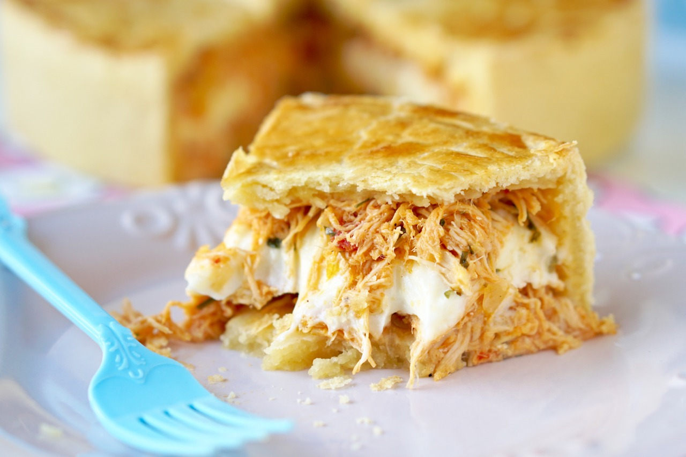

Empadão de Frango com Requeijão

⏱️ 1h
👨👩👧👦 Serve 8 porções
Ingredientes (massa)
- 3 xícaras (chá) de farinha de trigo
- 150g de manteiga gelada
- 1 ovo
- Sal a gosto
- Água gelada até dar o ponto
Ingredientes (recheio)
- 2 xícaras (chá) de frango cozido e desfiado
- 1 cebola picada
- 2 dentes de alho
- 1 tomate picado
- Milho e ervilha a gosto
- 1 copo de requeijão cremoso
- Sal, pimenta e cheiro-verde a gosto
Modo de preparo
- Misture farinha, manteiga, sal e ovo até formar uma farofa. Adicione água aos poucos até formar uma massa que desgrude das mãos.
- Deixe descansar na geladeira por 20 minutos.
- Refogue cebola, alho, frango, tomate, milho, ervilha e temperos. Misture o requeijão no final.
- Abra metade da massa e forre o fundo e laterais de uma forma.
- Coloque o recheio e cubra com o restante da massa.
- Pincele com gema e asse em forno médio (180–200°C) até dourar.
 Papo de Panela
Papo de Panela